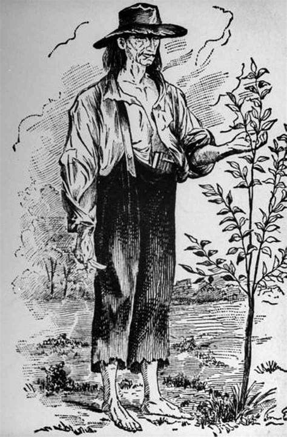

Home | Resume ## Johnny Appleseed - Data Scientist @ The Fruit Company This is the professional website of Johnny Appleseed. I am driven by the desire to grow as many apple trees as possible from seeds and by analysis of large-scale genomic data.

You can reach me here: University of Wyoming Laramie WY 82071 https://BowieTowito.github.io/testweb